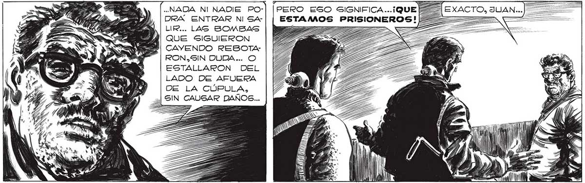
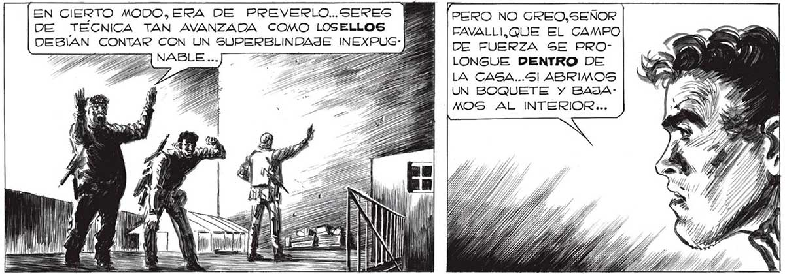
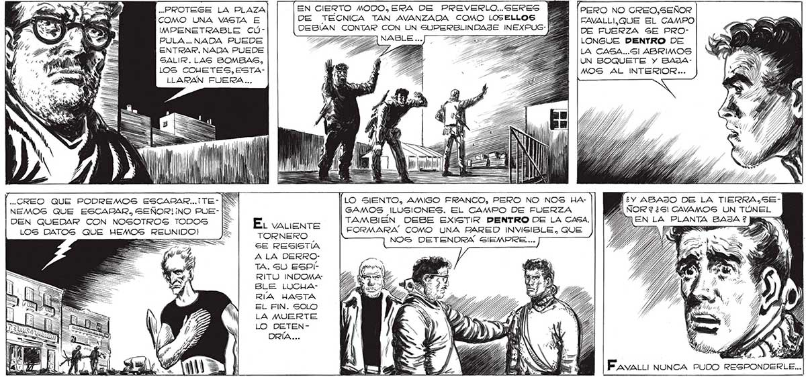

«NADA NI NADIE PODRA ENTRAR NI SA LIR... LAS BOMBAS QUE SIGUIERON CAYENDO REBOTARON.,SIN DUDA... O ESTALLARON DEL LADO DE AFUERA DE LA CÚPULA, NO, JUAN... SEGURO QUE 275 EL CAMPO D 2 sl —= PROTEGE LA PLAZA EN CIERTO MODO, ERA DE PREVERLO.. SERES COMO UNA VASTA E DE TECNICA TAN AVANZADA COMO LOSELLOS [3 IMPENETRABLE CUÚ- DEBIAN CONTAR CON UN SUPERBLINDAJE INEXPUG: [2 PULA... NADA PUEDE GA 7 - EEES ENTRAR, NADA PUEDE Dl SALIR. LAS BOMBAS, LOS COHETES,ESTALLARAN FUERA... PERO NO GREO,SEÑOR FAVALLI,QUE EL CAMPO DE FUERZA SE PROLONGUE DENTRO DE LA CASA...5l ABRIMOS UN BOQUETE Y BAJAMOS AL INTERIOR... E Ep => a PP Ml ) j | ¡ ¿ AMY tp ' l W CREO QUE PODREMOS ESCARAR...¡TE- NS LO SIENTO, AMIGO FRANCO, PERO NO NOS HANEMOS QUE ESCARAR, SENOR!INO PUE-jS GAMOS ILUSIONES. EL CAMPO DE FUERZA ¿Y ABAJO DE LA TIERRA.SEPY) NOR? ¿Gl CAVAMOS UN TÚNEL LA NTA BAJA ? GON ZA: EN d 7 DEN QUEDAR CON NOSOTROS TODOS LOS DATOS QUE HEMOS REUNIDO! TAMBIEN DEBE EXISTIR DENTRO DE LA CASA. FORMARA COMO UNA PARED INVISIBLE, QUE NOS DETENDRA SIEMPRE... Él vaviente TORNERO SE RESISTÍA A LA DERROTA. SU ESPI? RITU INDOMA: BLE LUCHA- | RÍA HASTA ¿eo TADA EL FIN. SOLO 7" DNS LA MUERTE » Y bn LO DETEN- IP DRÍA... / ' : A TRA NN, AS Pra NUNCA PUDO RESPONDERLE...


